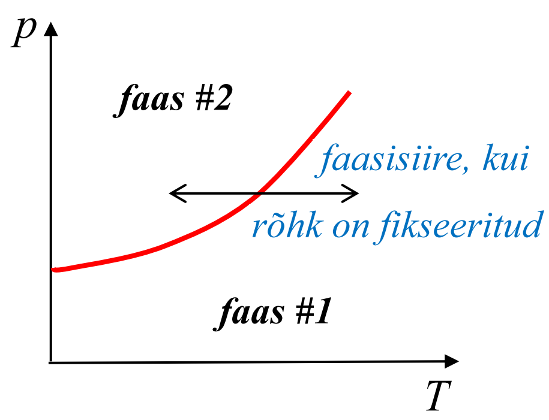
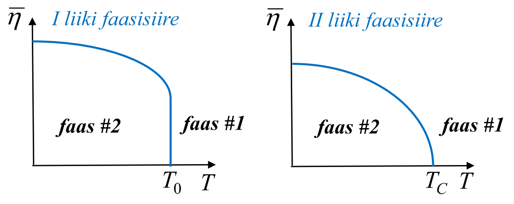
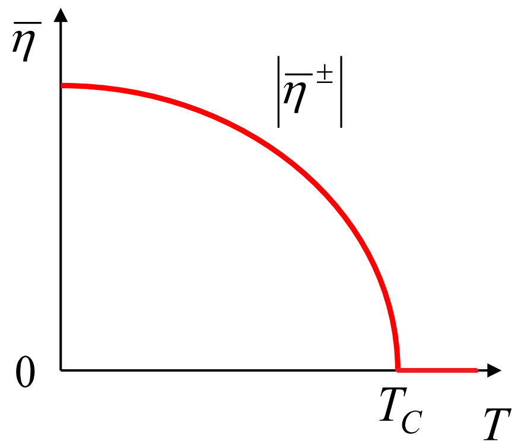
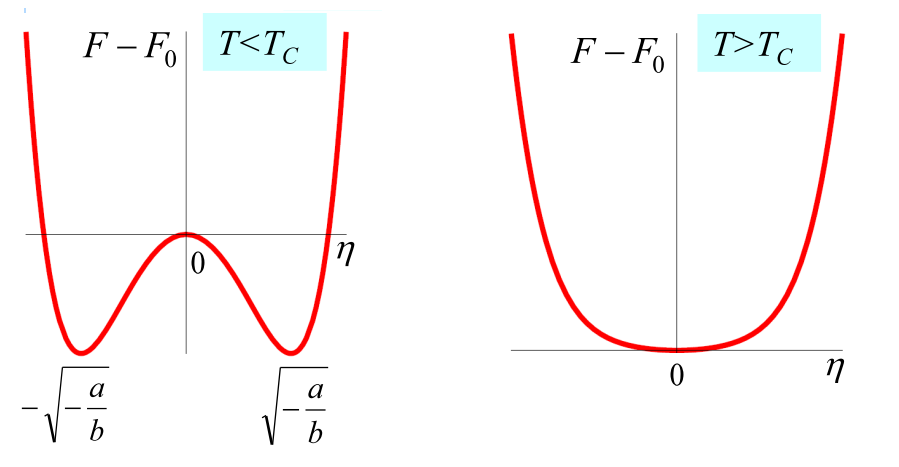
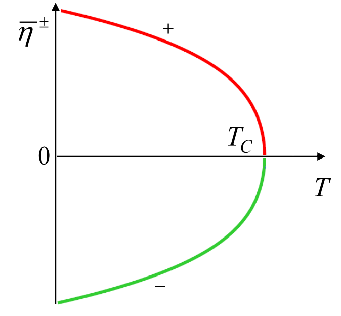
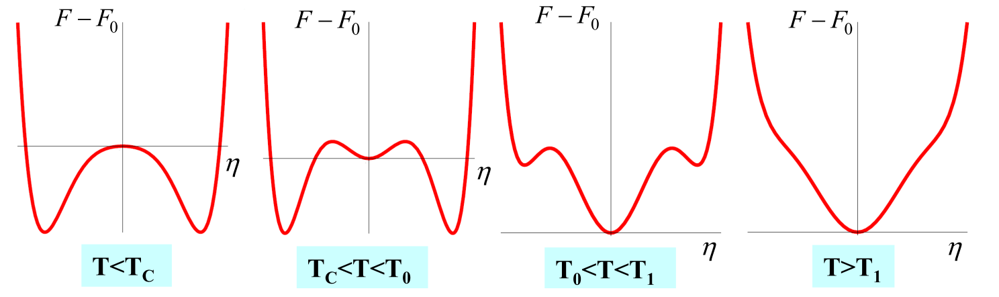
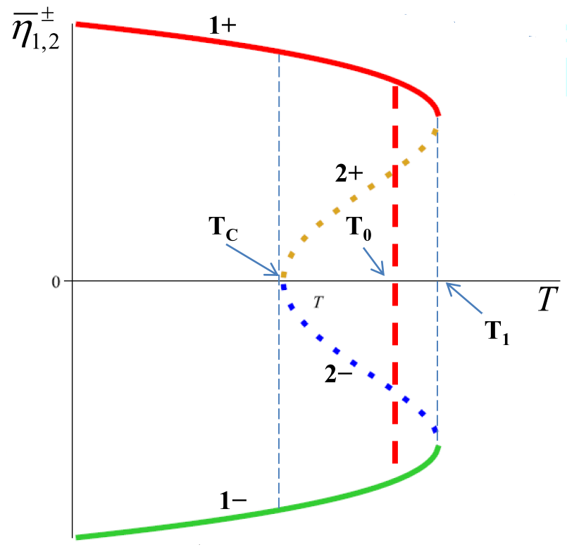

Faasisiirete fenomenoloogiline teooria
Contents
6.1. Faasisiirete fenomenoloogiline teooria¶
6.1.1. Sissejuhatavad märkused¶
Faasiks nimetatakse termodünaamilises tasakaalus oleva süsteemi füüsikaliselt homogeenset osa, mis erineb oma füüsikalistelt omadustelt süsteemi teistest osadest ja on selgepiiriliselt eraldatud neist. Kui süsteem tervikuna on füüsikaliselt homogeenne, siis on tegemist ühefaasilise süsteemiga. Kui süsteemis on mitu füüsikaliselt erinevaid homogeenseid osasid, siis räägitakse mitmefaasilisest süsteemist.
Näited faasidest:
Agregaatolekud (gaasiline, vedel, kristalliline olek)
Paramagneetiline ja ferromagneetiline olek ferromagneetikus. Paramagneetilises faasis puudub süsteemis ilma välise magnetväljata makroskoopiline magneetumus, aga ferromagneetilises faasis (teatud temperatuuridel) tekib spontaanne magnetumus välise magnetvälja puudumisel.
Paraelektriline ja ferroelektriline olek ferroelektrikus. Paraelektrilises faasis puudub süsteemis ilma välise elektriväljata makroskoopiline polarisatsioon, aga ferroelektrilises faasis (teatud temperatuuridel) tekib spontaanne polarisatsioon välise elektrivälja puudumisel.
Tahkise erinevad kristallilised modifikatsioonid.
Normaalseisend ja ülijuhtiv seisund metallis jt.
Faaside tasakaal: Kahefaasilises süsteemis on faas nr 1 ja faas nr 2 tasakaalus, kui on täidetud tingimused \(T_{1}=T_{2}\), \(p_{1}=p_{2}\) ja \(\mu_{1}=\mu_{2}\), kus \(T,p,\mu\) on temperatuur, rõhk ja keemiline potentsiaal vastavalt.
Faasidiagramm on pilt, mis näitab mingi parameetrite ruumis eristatavad piirkonnad, kus realiseeruvad erinevad faasid. Näitena on toodud kahemõõtmiline ruum rõhu ja temperatuuri tasandil, kus punane joon eraldab kahte faasi. Kui rõhk on fikseeritud, siis vähenedes temperatuuri toimub faasisiire, ehk süsteem läheb faasist nr 1 faasi nr 2.
{kind=link}
I liiki faasisiire: Gibbsi vabaenergia \(G=G(T,p)\) esimest järku tuletised muutuvad faasisiirde punktis hüppeliselt. Seega muutuvad hüppeliselt süsteemi entroopia ja ruumala.
II liiki faasisiire: Gibbsi vabaenergia esimest järku tuletised muutuvad pidevalt, teist järku tuletised aga hüppeliselt. Hüppeliselt muutub seega näiteks süsteemi soojusmahtuvus.
Faasisiirdega kaasneb reeglina sümmeetria spontaanne rikkumine. Kahefaasilise süsteemi korral räägitakse korrastamata (kõrgsümmeetrilisest) ja korrastatud (madalsümmetrilisest) faasidest. Nende faaside vahel toimub faasisiire koos sümmetria alanemisega. Näitena võib tuua
Kristallilise tahkise ja vedeliku vahelist faasisiiret, kus liikudes vedelikufaasist tahkisefaasi leiab aset pideva nihkesümmeetria rikkumine. Nimelt realiseerub vedelikus pidev nihkesümmeetria (saame süsteemi viia üle iseendaks suvalise ruumilise nihkega), kuid tahkisefaasis realiseerub diskreetne nihkesümmeetria (kristall ei ühti iseendaga suvalise ruumilise nihke korral).
Paramagneerilise ja ferromagneerilise faaside vaheline faasisiire, kus liikudes paramagneetilisest faasist toimub pöördsümmeetria rikkumine, mis väljendub selles, et paramagneetilises faasis on kõik ruumisuunad võrdväärsed, kuid ferromagneetilises faasis muutub üks ruumisuund eelistatuks.
Faasisiiret kirjeldatakse korrastusparameeteri abil. See on teatav parameeter, millest termodünaamilised potentsiaalis sõltuvad ning mille tasakaaluliste väärtuste abil on võimalik eristada süsteemis realiseeruvaid faase. Kahefaasilise süsteemi korral on ühes faasis (korrastamata faasis) korrastusparameetri tasakaaluline väärtus võrdne nulliga, teises faasis (korrastatud faasis) on see aga nullist erinev. Pildil on kujutatud korrastusparammetri tasakaalulise väärtuse \(\bar{\eta}\) sõltuvus temperatuurist.
{kind=link}
I liiki faasisiirde korral tekib korrastusparameetri nullist erinev tasakaaluline väärtus hüppeliselt.
II liiki faasisiirde korral tekib korrastusparameetri nullist erinev tasakaaluline väärtus pidevalt.
6.1.2. Faasisiirete Landau fenomenoloogiline teooria¶
6.1.2.1. II liiki faasiirete teooria¶
Alustame siin II liiki faasisiirete teooriast, mille pakkus Lev Landau aastal 1937. Fenomenoloogiliseks nimetatakse seda teooriat sellepärast, et teooria ei seleta ära ühtegi faasisiiret, kuid lihtsalt kirjeldab neid väga universaalses keeles. Teooria võimaldab kirjeldada täiesti erineva füüsikalise taustaga faasiüleminekuid: ferromagneetilisi süsteeme, ferroelektrilisi süsteeme, ülijuhte jne.
Teooria aluseks on korrastusparameeter, mida me tähistame edaspidi tähega \(\eta\). Kõige lihtsamal juhul on \(\eta\) reaalne skalaarne suurus.
Kasutame süsteemi kirjeldamiseks seoses II liiki faasisiirdega Helmholtzi vabaenergia, mis peale loomulikuke muutujate sõltub ka korrastusparameetrist \(F=F(T,V,\eta)\). Osakeste arvu loeme konstantseks \(N=\mathrm{const}\).
Kui süsteem relakseerub termodünaamilise tasakaalu seisundisse, siis Helmholtzi vabaenergia saavutab tasakaalus minimaalse väärtuse. Lugedes temperatuuri \(T\) ja ruumala \(V\) muutumatuks saavutab \(F\) ekstremaalse väärtuse, kui korrastusparameetril on vastav tasakaaluline väärtus \(\eta=\bar{\eta}\). On selge, et \(\bar{\eta}\) tuleb määrata Helmholtzi vabaenergia miinimumitingimusest fikseeritud \(T\) ja \(V\) korral, mille tulemuseks saame funktsiooni \(\bar{\eta}=\bar{\eta}(T,V)\). Seega sõltub Helmholtzi vabaenergia termodünaamilises tasakaalus ainult oma loomulikest muutujatest \(F=F(T,V,\bar{\eta}(T,V))\).
Tuletame siin meelde, et tasakaaluliseks skalaarseks korrastusparameetriks \(\bar{\eta}\) saab näiteks olla spontaanne polarisatsioon üheteljelises ferroelektrikutes või spontaanne magneetumus üheteljelises magneetikus. See tähendab, et korrastatud faasis on olemas nullist erinev polarisatsioon ferroelektrikus (magnetumus ferromagneetikus), kuid korrastamata faasis see puudub ehk võrdub mulliga.
Edasi eeldame, et süsteemi ruumala on fikseeritud \(V=\mathrm{const}\), seega sõltub Helmholtzi vabaenergia tasakaalus ainult temperatuurist. Landau teoorias postuleeritakse, et kehtib Helmholtzi vabaenergia Landau reaksarendus
kus
\(\eta\) on mittetasakaaluline korrastusparameeter, mille väärtus termodünaamilises tasakaalus \(\bar{\eta}\) on määratud vabaenergia miinimumi tingimusega,
\(F_0(T)=F(T,0)\) on vabaenergia osa, mis ei sõltu korrastusparameetrist,
koefitsendid \(a,b\) on üldjuhul temperatuuri funktsioonid,
\(a(T)=\alpha(T-T_c)\) ja \(\alpha=\mathrm{const}>0\),
\(b=\mathrm{const}>0\) ja see tingimus tagab süsteemi stabiilsuse nii, et korrastusparameetri kasvades kasvab vabaenergia ja süsteem liigub tasakaaluseisundist eemale,
\(T_c\) on II liiki faasisiirde temperatuur ehk kriitiline temperatuur.
Landau reaksarendus kehtib siis, kui temperatuur \(T\) on piisavalt lähedal temperatuurile \(T_c\).
Korrastusparameetri tasakaaluline väärtus vastab termodünaamilisele tasakaalule ning tuleb määrata vabaenergia minimaalsuse tingimusest
Need on miinimumi tarvilik ja piisav tingimused vastavalt. Vabaenergia (6.1) osatuletis annab tingimuse \(a(T)\bar{\eta}+b\bar{\eta}^3=0\) ja selle reaalarvulised lahendid on järgmised
Need lahendid on saadud tarvilikust tingimusest ja nad võivad vastata nii miinimumile, kui ka maksimumile. Miinimumi piisavaks tingimuseks on \(a(T)+3b\bar{\eta}^2>0\). Näeme, et
lahend \(\bar{\eta}=0\) vastab miinimumile, kui \(a(T)>0\) ehk \(T>T_c\). Kui \(T<T_c\), siis lahend \(\bar{\eta}=0\) vastab vabaenergia maksimumile
lahendid \(\bar{\eta}^\pm\) vastavad miinumumidele, kui \(-2a(T)>0\) ehk \(T<T_c\)
Me olime saanud, et korrastamata faasile vastab korrastusparameetri tasakaaluline väärtus \(\bar{\eta}=0\). Kui \(T>T_{c}\), siis on korrastamata faas stabiilne, st \(\bar{\eta}=0\) vastab vabaenergia miiinimumile. Kui \(T<T_{c}\), siis on korrastamata faas ebastabiilne, st \(\bar{\eta}=0\) vastab vabaenergia maksimumile. Temperatuuril \(T<T_{c}\) muutub stabiilseks korrastatud faas, mille korral on korrastusparameeteril nullist erinevad väärtused \(\bar{\eta}^\pm\).
Saadud lahendist järeldub, et korrastusparammetri tasakaaluline väärtus saab nullist erinevaks sõltuvalt temperatuurist pidevalt, vt joonist. Siinkohal tasub ka mainida, et Landau teooriale vastab ainult käitumine \(T_c\) ümbruses. Madalatel temperatuuridel \(T\ll T_c\) ei kehti Landau teooria ja on vaja rakendada mikroskoopilist teooriat.
{kind=link}
Helmholtzi vabaenergia sõltuvus mittetasakaalulisest korrastusparameetirist on näha järgmisel joonisel.
{kind=link}
Saame teha järgmised järeldused
Kui \(T<T_c\), siis vabaenergial on kaks miinimumi, mis on eraldatud maksimumiga.
Maksimumile vastab korrastusparameetri väärtus \(\eta=0\) ning miinimumidele \(\eta=\bar{\eta}^\pm\).
Termodünaamilises tasakaalus realiseerub meil seisund, mille vabaenergia on minimaalne. See võrdub \(F(T,\bar{\eta}^\pm)=F_0(T)-\frac{a(T)^2}{4b}\).
Temperatuuri tõstmisel miinimume eraldav barjäär muutub madalamaks ja temperatuuril \(T=T_c\) kaob ära.
Temperatuuridel \(T>T_c\) on vabaenergial ainult üks miinimum ja korrastusparameetri tasakaaluline väärtus võrdub nulliga \(\bar{\eta}=0\).
Sel juhul on vabaenergial tasakaaluline väärtus \(F(T,\bar{\eta})=F_0(T)\).
Siit järeldub muuhulgas, et tegu on II liiki faasisiirdega, kuna \(\frac{\partial F(T,\bar{\eta})}{\partial T}\) muutub temperatuuri funktsioonina faasisiirde punktis pidevalt, kuid \(\frac{\partial^2 F(T,\bar{\eta})}{\partial T^2}\) (ja seega ka soojusmahtuvus \(C_V(T)\)) muutub hüppeliselt.
6.1.2.2. Üldine faasiirete teooria¶
Räägime siin üldisemast skeemist ja võtame arvesse Landau reaksarenduses kõrgemat järku liiget
kus lisaks varem tehtud eeldustele nõuame, et
\(b=\mathrm{const}\),
\(c=\mathrm{const}>0\), et tagada süsteemi stabiilsuse.
Kordaja \(b\) märk määrab selles skeemis ära, kas tegu on I või II liiki faasisiirdega.
Täies analoogias eespool tehtavaga on lihtne veenduda, et korrastamata faasis on \(\bar{\eta}=0\). Korrastatud faasi jaoks annab miinimumi tarvilik tingimus \(a(T)\eta+b\eta^{3}+c\eta^5=0\) neli lahendit
Detailne analüüs on vajalik, et selgitada välja mis piirkonnas üks või teine lahend realiseerub ja milline on lahendi tähendus.
II liiki faasiriire \(b>0\). Positiivse \(b\) korral ei ole lahend \(\overline{\eta}_{1}\) reaalarvuline temperatuuridel \(T<T_c\). Nendel temperatuuridel on meil kaks nullist erinevat reaalarvulist lahendit kujul
\[\overline{\eta}^\pm_{2}=\bar{\eta}^\pm=\pm\sqrt{-\frac{b}{2c}\left(1-\sqrt{1-\frac{4a(T)c}{b^{2}}}\right)}\]Lahendite temperatuurne sõltuvus on näidatud pildil.
Näeme, et \(\bar{\eta}^\pm\) saavad nullist erinevaks pidevalt temperatuuril \(T_c\), mis on II liiki faasisiirde punktiks. Vabaenergia miinimumi piisavast tingumusest järeldub, et \(\bar{\eta}^\pm\) vastavad miinimumidele ja lahend \(\bar{\eta}=0\) maksimumile temperatuuridel \(T<T_c\). Kui \(T>T_c\), siis ainukeseks ekstreemumiks on miinimum kohal \(\bar{\eta}=0\).
Ülesanne
Veenduge, et leitud korrastusparameetri väärtused \(\bar{\eta}^\pm\) vastavad vabaenergia miinimumidele, kui \(T<T_{c}\), \(b>0\) ja \(c>0\).
Vabaenergia sõltuvus mittetasakaalulisest korrastusparameetrist \(F=F(T,\eta)\) on sel juhul samasugune, kui oli II liiki faasisiirde puhul.
I liiki faasiriire \(b<0\). Negatiivse \(b\) korral on vabaenergia profiil rikkalikum, vt pilti.
Kõrgetel temperatuuridel \(T>T_1=T_c+\frac{b^2}{4\alpha c}\) on korrastusparameetri tasakaaluliseks väärtuseks \(\bar{\eta}=0\)
Temperatuuri alanemisel tekivad hüppeliselt temperatuuril \(T_1\) neli nullist erinevat lahendit. Üks paar vastab vabaenergia miinimumidele
\[\overline{\eta}^{\pm}_{1}=\pm\sqrt{-\frac{b}{2c}\left(1+\sqrt{1-\frac{4a(T) c}{b^{2}}}\right)},\qquad T<T_1,\]ja teine paar vabaenergia maksimumidele
\[\overline{\eta}^{\pm}_{2}=\pm\sqrt{-\frac{b}{2c}\left(1-\sqrt{1-\frac{4a(T) c}{b^{2}}}\right)},\qquad T_c<T<T_1.\]Ülesanne
Veenduge, et
korrastusparameetri väärtused \(\bar{\eta}_1^\pm\) vastavad vabaenergia miinimumidele, kui \(T<T_{1}\), \(b<0\) ja \(c>0\)
korrastusparameetri väärtused \(\bar{\eta}_2^\pm\) vastavad vabaenergia maksimumidele, kui \(T_{c}<T<T_{1}\), \(b<0\) ja \(c>0\)
korrastusparameetri väärtused \(\bar{\eta}_1^\pm\) ja \(\bar{\eta}_2^\pm\) on komplekssed, kui \(T>T_{1}\)
korrastusparameetri väärtused \(\bar{\eta}_2^\pm\) on komplekssed, kui \(T<T_{c}\)
Samal ajal säilib vabaenergial miinimum punktis \(\eta=0\). Lahendite \(\bar{\eta}_{1,2}^\pm\) temperatuurne sõltuvus on pildil.
Temperatuuri edasisel alanemisel saavutavad kõik kolm miinimumi tasakaalu temperatuuril \(T_0=T_{c}+\frac{3b^{2}}{16\alpha c}\). Temperatuuril \(T<T_0\) saavad korrastatud faasile vastavad miinimimid sügavamaks, kui korrastamata faasile vastav miinimum punktis \(\eta=0\). Niisiis muutub korrastamata faas metastabiilseks ja korrastatud faas stabiilseks
Ülesanne
Näidake, et Landau vabaenergiaga kirjeldatavas I liiki faasisiirdega süsteemis
on korrastatud ja korrastamata faas tasakaalus, kui \(T=T_{0}\)
kehtib võrratus \(F(\overline{\eta}^{\pm}_{1})<F(0)\), kui \(T_{c}<T<T_{0}\)
kehtib võrratus \(F(\overline{\eta}^{\pm}_{1})>F(0)\), kui \(T_{0}<T<T_{1}\)
Temperatuuril \(T<T_c\) kaob ära metastabiilne korrastamata faas ja vabaenergial on maksimum punktis \(\eta=0\).
I liiki faasisiirde korral on olemas kolm karakteerset temperatuuri
Temperatuur \(T_1\), mille korral tekivad nullist erinevad lahendid \(\bar{\eta}_{1,2}^\pm\)
Temperatuur \(T_0\), mille korral on korrastatud ja korrastamata faas tasakaalus
Temperatuur \(T_c\), mille korral kaob ära metastabiilne korrastamata faas
I liiki faasisiirde punktiks loetakse kokkuleppeliselt temperatuur \(T_0\), aga siin tasub pidada meeles, et isegi madalatel temperatuuridel \(T<T_0\) võib süsteem jääda korrastamata faasi teatud ajaks, või vastupidi kõrgetel temperatuuridel \(T>T_0\) võib süsteem olla korrastatud metastabiilses faasis. Võib öelda, et I liiki faasiriire toimub temperatuuride \(T_c\) ja \(T_1\) vahelises vahemikus.
Ülesanne
Põhjendage vabaenergia \(F(\eta)=F_{0}+\frac{1}{2}a\eta^{2}+\frac{1}{4}b\eta^{4}+\frac{1}{6}c\eta^{6}\) alusel, kus \(\eta\) on korrastusparameeter ning koefitsendid \(a(T)=\alpha(T-T_{c})\), \(\alpha=\mathrm{const}>0\), \(b=\mathrm{const}\) ja \(c=\mathrm{const}>0\), et esimest järku tuletis temperatuuri järgi vabaenergiast termodünaamilises tasakaalus \(F(\bar{\eta})\) muutub I liiki faasisiirde punktis hüppeliselt.
{kind=link}
{kind=link}
{kind=link}